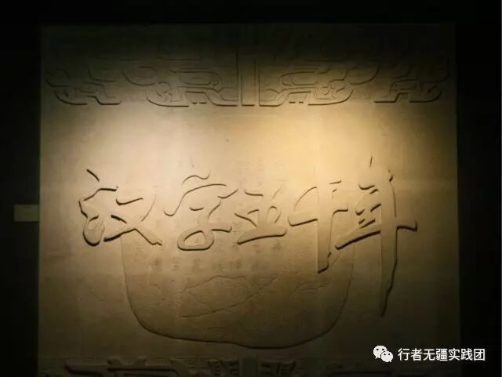
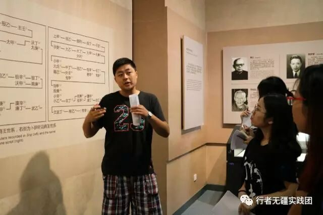

【行者明信片·肆·前路无涯，行者天下】
前路无涯，行者天下
世界那么大，我想去看看。如今时代发展，日新月异，我们每个人都囿于自己的舒适圈内。我是个热爱自由的人，于是我加入了行者无疆，进行了一场文化苦旅。而在这段旅途中我也收获颇多。

安阳——登封——洛阳
我们观赏很多经典文化景点。文字博物馆，殷墟，少林寺，嵩阳书院，龙门石窟等等…而让我印象深刻的，是对文字的感悟理解。


文字代表着一个国家。而我国独特的甲骨文以其悠久历史，文化价值高而闻名于世。甲骨文属于上古汉语，你可曾知道它也是一种成熟文字，是经过几千年才呈现出如今的模样。当王懿荣第一次发现甲骨文的时候，华夏文明的文字画卷缓缓开启。我不禁在想，当伟大的先人们拿着龟背牛骨进行占卜，当他们通过形状,动作，意义等创造出文字，那是多么珍贵的文化结晶啊！
殷墟因发掘甲骨文而闻名于世，如果说文字博物馆是将结果呈现给世人，那么殷墟就是承载了这一切的真实依据。这里有甲骨文被证实的遗迹，有玉器时代精美的饰品文物，有当时奴隶社会时期殉葬的原墓。也许那个时代人与人不是完全平等，以至于我看到活人殉葬还有一些心痛。但多年过去，现今一片祥和平等，永远不会再有陪葬，这是时代的进步，也是人类文明日趋成熟的表现。

少林寺的佛教文化，龙门石窟的悠久历史…都让我大开眼界也感悟良多。
这次旅行，我主要负责宣传工作，在发问卷，向游人们讲解，采访工作人员等等活动中，我锻炼了自己，也学到了知识。更重要的，我认识了行者无疆团队成员，我们互相帮助，彼此包容，收获了纯真的友谊。
不虚此行！

河南行
身体和心灵总有一个在路上
行者无疆·贰
公众号：行者无疆实践团
微博号：行丶者丶无丶疆
邮箱：2758025831@qq.com

文字|彭博
责编|彭博
审核|章静 王梓腾